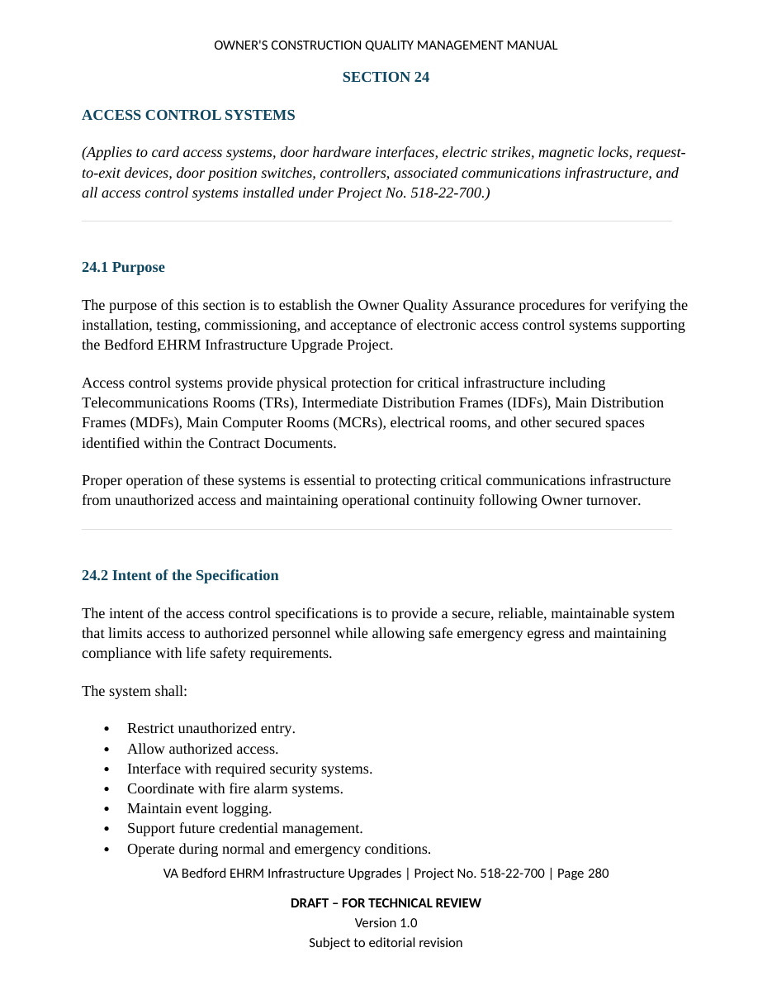

KNOWLEDGE SYSTEMS · CONSTRUCTION QUALITY
Owner's Construction Quality Management Manual
A project-specific operational knowledge system created for the VA Bedford EHRM Infrastructure Upgrades project.
 Revision 1.0 · Draft for Internal Review
Revision 1.0 · Draft for Internal ReviewTHE CHALLENGE
Specifications define obligations. They do not automatically create an operating system.
The Bedford EHRM project spans more than thirty occupied medical-campus buildings and includes telecommunications rooms, a main computer room, fiber backbone replacement, Category 6A cabling, electrical and HVAC upgrades, plumbing, fire protection, fire alarm, CCTV, access control, commissioning, OIT activation, and building-by-building acceptance.
The quality function therefore needed more than a collection of checklists. It required a coherent framework showing how contract requirements, contractor quality control, field verification, evidence, deficiency management, readiness decisions, and owner acceptance fit together.
THE SOLUTION
A technical publication designed as an operational system.
The manual establishes the mission, authority, decision hierarchy, daily workflow, definable features of work, specification-based procedures, trade-specific acceptance criteria, communications, reporting, deficiency control, building readiness, OIT activation, beneficial occupancy, final acceptance, warranty support, and continuous improvement.
DOCUMENT ARCHITECTURE
Built for navigation, repeatability, and evidence.
- Eight-part hierarchy with 40 numbered sections.
- Specification-driven owner QA procedures for Divisions 01, 07, 09, 22, 23, 26, 27, and 28.
- Standard recurring structure: purpose, intent, prerequisites, verification procedure, evidence, red flags, project risks, PMIS integration, and acceptance criteria.
- Dedicated procedures for daily reporting, photographic records, deficiencies, meetings, readiness, OIT activation, beneficial occupancy, final acceptance, warranties, and lessons learned.
- Twelve appendices containing reports, checklists, data standards, acceptance matrices, a building playbook, specification cross-reference index, and acronyms.
WHY IT MATTERS
The artifact is evidence of solutions engineering—not merely technical writing.
This work required discovering the real operational problem, designing an information hierarchy, translating dense source material into user decisions, standardizing repeatable workflows, integrating field activity with a PMIS, and producing a professional deliverable that can support training, accountability, and acceptance.
DOCUMENT GALLERY
From governance to field execution.
Selected pages demonstrate the manual's scale, hierarchy, technical content, and standardized field tools.





PORTFOLIO PREVIEW
Review the opening framework and field appendices.
The portfolio preview contains the introductory architecture and the standardized forms/checklists section. The complete working document remains a controlled project artifact.
Open PDF preview